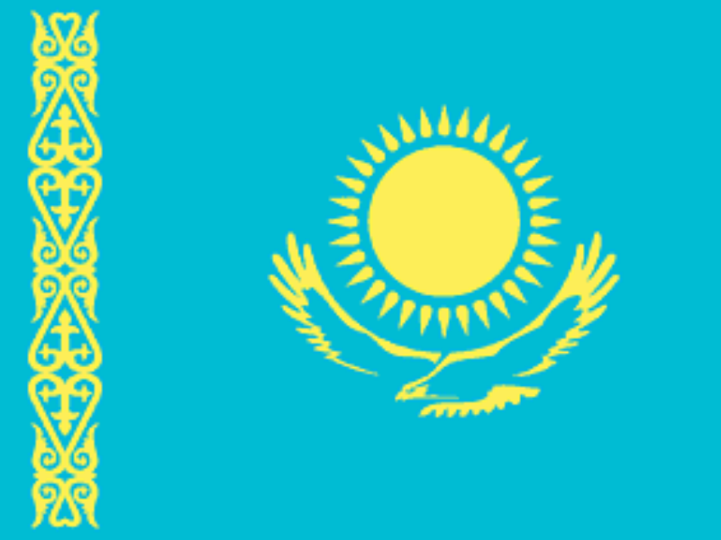
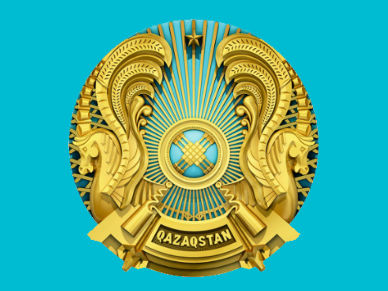
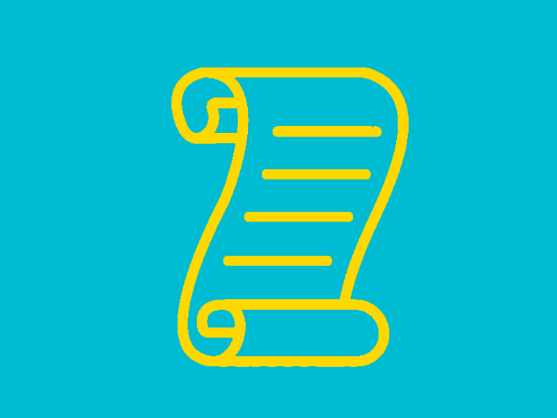

Флаг был принят 4 июня 1992 года и отражает историю, культуру и стремления казахского народа.
Голубой цвет: символизирует мир,
Солнечный орел: стремление к будущему,
Золотая полоса и узор: символизирует культурное наследие и традиции казахского народа.

Герб Казахстана представляет собой круглый щит,
в центре которого изображён золотой шанырак с лучами и две волнистые линии, символизирующие реку и жизнь.
Щит окружён образами крылатого коня и золотых звёзд, которые символизируют свободу и независимость.

Гимн Казахстана называется "Моя Родина"
был принят 11 декабря 1992 года.
Слова к гимну написал поэт Жұмекен Нажимеденов, а музыку композитор Шамши Калдаяков.
Гимн активно исполняется на государственных мероприятиях, праздниках и спортивных соревнованиях, становясь символом единства и патриотизма казахского народа.
Казахстан находится в центре Евразии, между Каспийским морем, Нижним Поволжьем, Уралом, Сибирью, Китаем и Средней Азией. На севере и западе он граничит с Россией,
на востоке — с Китаем, на юге — с Кыргызстаном, Узбекистаном и Туркменистаном.
Расстояние от восточных границ Казахстана до западных границ Монголии составляет примерно 40 км.
Общая протяжённость сухопутных границ страны — 13 392,6 км.
Это самая большая тюркская страна в мире по территории. Казахстан омывается водами внутриконтинентальных Каспийского и Аральского морей и не имеет выхода к Мировому океану,
что делает его крупнейшей страной без выхода к океану по площади.
Экономика Казахстана является одной из самых динамично развивающихся в Центральной Азии.
Страна обладает значительными запасами природных ресурсов, включая нефть, природный газ, уголь, уран и металлы.
Нефтяной сектор составляет основу экономики и является основным источником экспортных доходов.
Казахстан также является крупнейшим производителем урана в мире.
Карта Казахстана, в режиме просмотра городов. Нажмите на нужный вам регион что бы посмотреть дополнительную информацию о городе!
Нажмите на кнопку что бы найти нужный вам город!
Интерактивная таблица городов Казахстана
Город
Население
Алматы
2039376
Астана
1353000
Шымкент
1185019
Улучшенный функционал
Информация о вас:
Иссыкский золотой человек
Иссыкский золотой человек — уникальная археологическая находка, датируемая V веком до нашей
эры. Он был обнаружен в Казахстане и символизирует культуру и богатство древних народов
степей. Костюм из золота, найденный на месте раскопок, считается одним из главных символов
казахской истории.